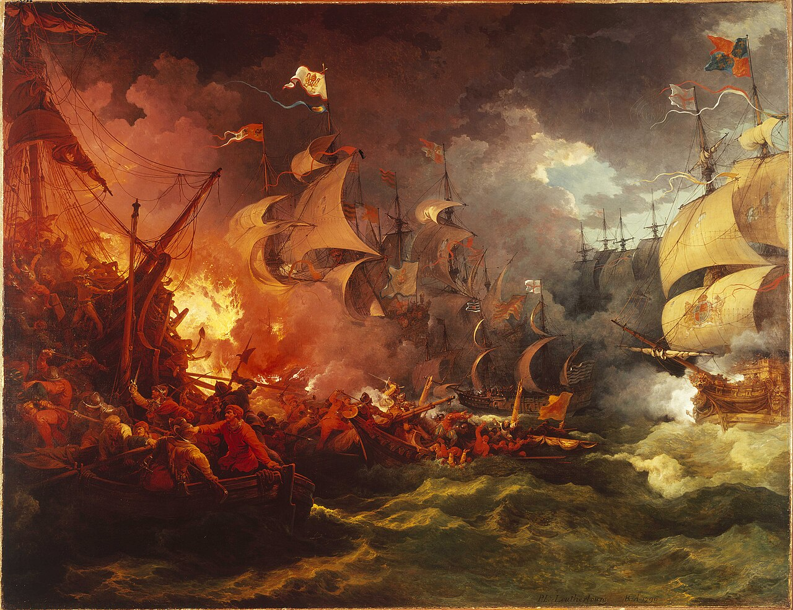
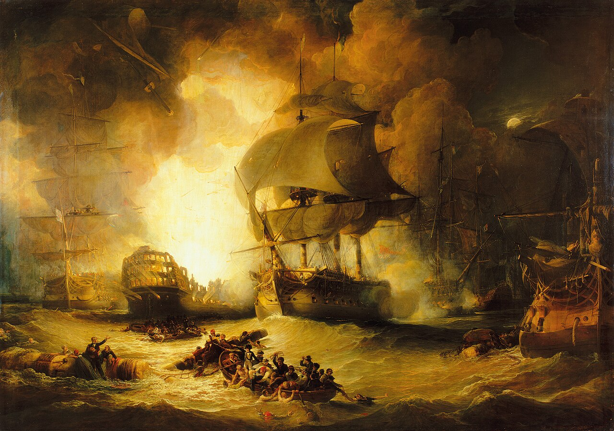
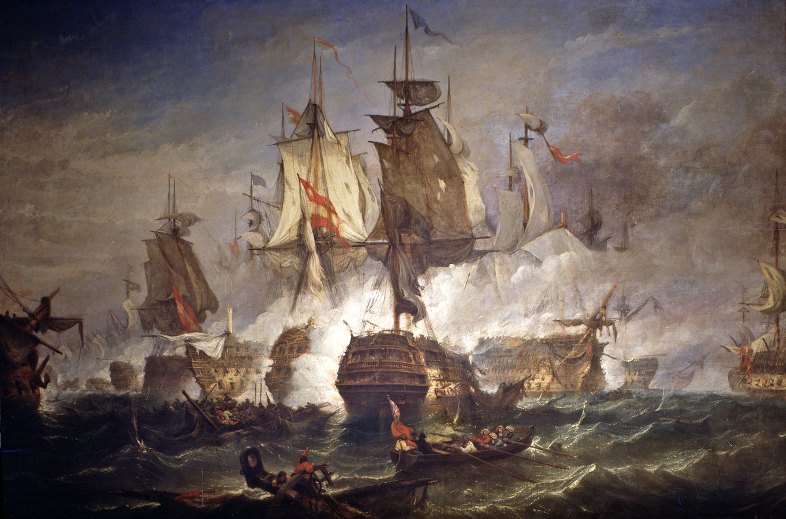
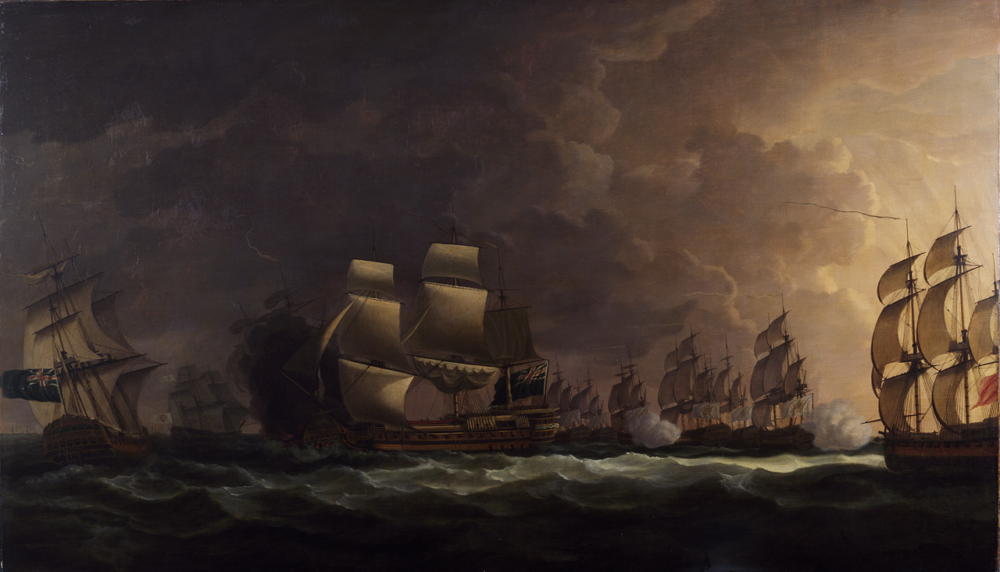
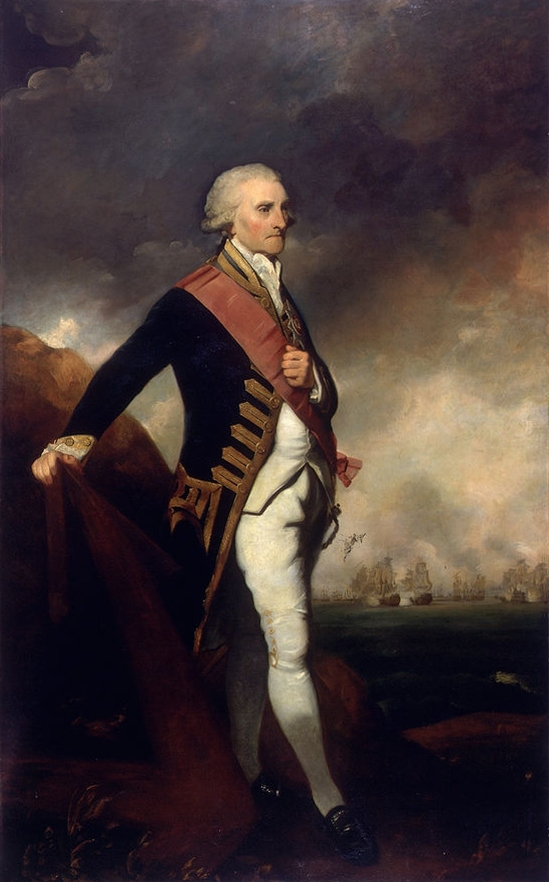
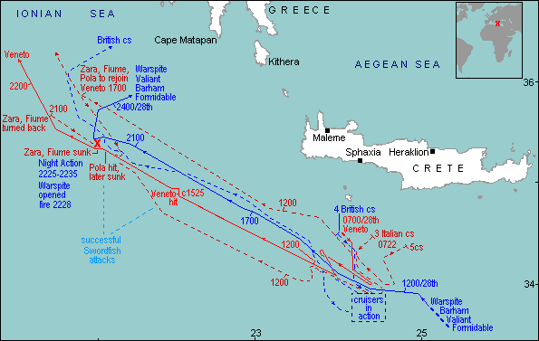
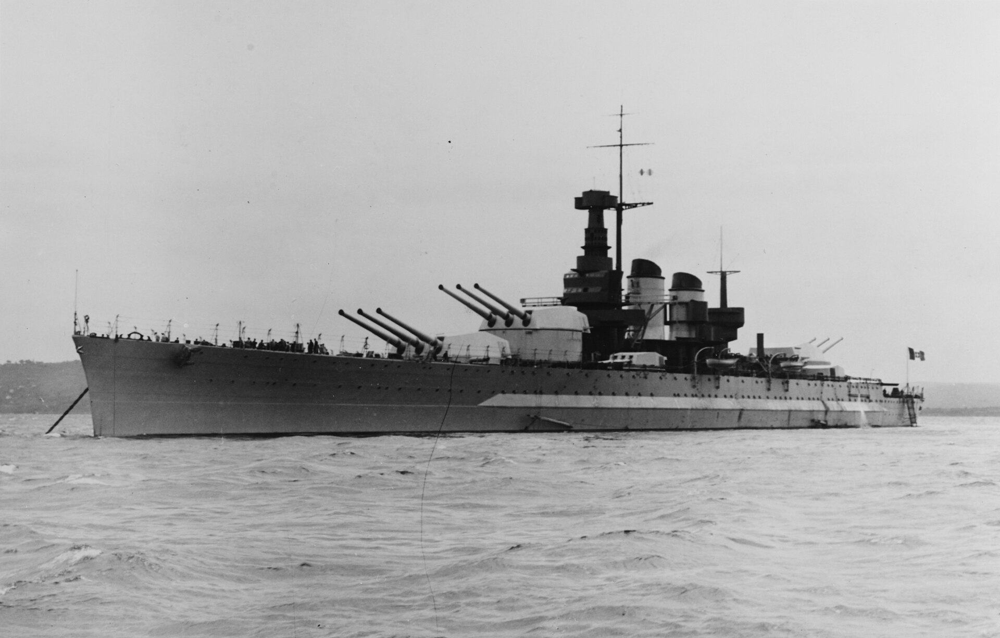

WW2 중 항모에서의 야간 작전 (2) - 달빛 해전
게시: 2025-02-20T06:30:47+09:00
<야간에 싸운 해전이 많았나?> 결국 이런 비극적 사고로 인해, 이후 당분간은 이런 위험한 야간 요격 작전은 실시하지 않게 됨. 나폴레옹도 야간 전투를 매우 싫어하는 편이었다고 하는데, 가만 보면 역사적으로 강대국 지휘관들은 모두 야간 전투를 싫어하고, 약한 측이 언제나 야습을 선호함. 이유는 간단. 인간은 태생적으로 주행성 동물로서 시각에 의존하는 바가 매우 크고, 그래서 야간 전투란 필연적으로 극심한 혼란 속에서 벌어지기 때문. 혼란 속에서는 통제가 안드로메다로 날아가기 마련이고, 통제가 안된 상태에서는 아무래도 뜻하지 않은 결과가 나올 확률이 높음. 즉, 낮에 싸우면 여유있게 승리를 거뒀을 쪽이 밤에는 까딱 잘못하면 지거나 이거더라도 피해가 훨씬 더 커질 수 있다는 것. 그러니 강대국 군대에서는 굳이 야간 전투를 선호하지 않음. 1943년 하반기부터 일본해군 항공대가 야습에 전력을 기울인 것도 똑같은 이유. 그런데 역사적으로 야간에 벌어진 해전이 있었던가? 노량해전이 대표적인 야간전투이긴 한데, 유럽 역사에서는 어떨까? 1588년 스페인 무적함대가 영국해군에게 괴멸된 것이 장거리포 때문이라는 소리도 있으나 그건 사실이 아니고, 칼레 해전이라고 명명된 야간 해전 덕분. 실은 해전이라기 보다는 칼레 인근 해변에 닻을 내린 스페인 무적함대를 향해 야간에 영국해군이 화공선을 밀어넣은 방화 사건. 이때 실제로 화재로 인한 손실보다는 야간에 대열이 흩어진 스페인 함대가 곧이어 들이닥친 폭풍에 의해 더 큰 피해를 입었음.

(오른쪽의 영국함대가 화공으로 왼쪽의 스페인 무적함대를 괴멸시키는 그림이지만 실제로는 전혀 이런 모습이 아니었음. 이 그림은 Philip James de Loutherbourg라는 프랑스 출신 영국 화가가 1796년 그린 것.) 그런데 이런 해전들은 모두 육지가 눈에 보이는 연안에서 치루어진 것이라서 대양에서의 야간 해전이라고 부르기엔 약간 부족함이 있음. 근대 유럽에서도 야간 해전이 있었을까? 가령 나폴레옹이 이집트로 타고 간 함대를 넬슨이 때려부순 아부키르 해전도 한밤중까지 싸우기는 했는데, 이것도 진짜 야간 전투라고 보기엔 약간 부족함. 이유는 역시 해안가에서 불과 백여m 떨어진 곳에 정박한 프랑스 함대를, 그것도 낮에 전투를 시작해서 밤 늦게까지 싸운 것에 불과하기 때문.

(1798년 8월의 아부키르 해전에서 한밤중에 프랑스 함대의 기함인 오리앙(L'Orien)이 폭발하는 장면) 이렇게 대양에서 야간 해전이 벌어진 경우가 거의 없는 이유는, 야간에는 적함대를 찾기가 매우 어렵기 때문. 그런데 야간 해전이라고 부를 만한 전투가 있긴 했음. <왜 달빛 해전인가> 미국 독립전쟁이 한창이던 1780년 1월 16일, 영국해군의 전열함 18척이 대규모 수송선단을 호송하여 스페인 남단 지브랄타 요새로 가고 있었음. 당시 미국 독립전쟁은 일종의 국제전이라서, 영국은 프랑스는 물론 스페인과도 교전 상태였기 때문에, 포위된 지브랄타에 보급품을 실어날라야 했기 때문. 그런데 이 영국 함대가 포르투갈 남단의 세인트 빈센트 곶(Cape St. Vincent)을 지나갈 때, 9척의 전열함으로 구성된 스페인 함대를 발견. 영국 함대 사령관이던 로드니(Rodney) 제독은 마침 아파서 누워있는 처지였으나 즉각 추격을 지시. 함대 규모상 매우 불리했던 스페인 함대는 줄행랑을 시도했으나 결국 따라잡힘. 이유는 영국 함대 전열함들은 바닥에 구리판을 깔았기 때문. 매끈한 구리판 덕분에 바닷물과의 마찰이 작아서 그런 것인가 하면 그건 아니고, 구리판을 깐 덕분에 따개비 같은 해양 생물들이 뱃바닥에 고착되지 않아 더 빨랐던 것. 아무튼 이렇게 스페인 함대를 따라잡은 것은 오후 4시였지만, 따라잡혔다고 스페인 함대가 도주를 포기한 것은 아니었으므로 스페인 함대 후미의 전열함 등과 교전하면서도 추격은 계속됨. 따라잡혀서 다구리를 맞은 후미의 스페인 전열함 2척이 폭팔하거나 항복한 뒤에도 추격은 계속 되었는데, 그러다 6시가 넘어서면서 어둠이 깔림. 영국 함대에서는 어둠 속에서의 교전은 위험하니 일단 추격을 멈춰야 하는 것 아니냐는 논의가 진행됨. 때마침 파도가 거센 상태였는데 어둠 속에서는 아군함들과의 전열 유지도 어렵고, 육지가 아주 멀지도 않은데 자칫 좌초라도 당하면 대형 참사였기 때문.

(세인트 빈센트 곶 해전 중 폭발하는 스페인 전열함 Santo Domingo. 이때는 아직 오후 4시 40분이라서 주간 해전임. Richard Paton 작.) 그러나 로드니 제독은 병석에 누워서도 단호하게 계속 추격 및 교전하라고 지시. 이건 당시 해전의 상식을 깬 결정. 당시 해전은 결국 boarding party, 즉 적선에 칼과 권총으로 무장한 승선조가 뛰어들면서 백병전을 벌여 나포하는 것으로 끝나는 것이 보통이었는데, 깜깜한 어둠 속에서 그런 난전을 벌일 경우 아군끼리 포격을 주고 받을 수도 있었으므로 매우 위험한 일이었음. 당시 함장들 중에는 로드니 제독이 돈독이 올라 부하들을 위험에 빠뜨린다고 툴툴댄 사람들도 분명히 있었을 것. 당시 prize money system에 따라 나포한 적함정은 매각하여 그 돈을 제독과 함장, 장교들과 선원들이 일정 비율로 나눠가지게 되어 있었기 때문. 따라서 전열함 9척이면 로드니 제독은 떼부자가 될 수 있었던 상황.결국 추격과 교전은 다음 날 새벽 2시까지 계속 되었고, 결국 3척을 추가로 더 나포하면서 끝남.

(해전 바로 1년 뒤인 1781년 그려진 '달빛 해전'. Dominic Serres 작.)

(당대 가장 유능한 제독이었던 George Brydges Rodney 경. 그러나 능력과는 별도로 그는 매우 탐욕스럽고 부정부패가 심각한 인간이었으며, 족벌주의도 심해서 자신의 아들을 불과 15살 때 정규함장(post captain)으로 만들 정도. 영국 육군이야 매관매직이 공식화된 곳이었으므로 그렇다치더라도 영국 해군은 그나마 능력과 전통을 중시하는 곳이어서, 물론 인맥 등이 임관과 승진에 있어 중요한 역할을 하기는 했지만 15살 짜리를 정규함장에 앉히는 일은 정말 해괴한 일. 저 달빛 전투에서 야간 전투의 위험을 무릅쓰고 교전을 지시한 것도 농담이 아니라 정말 나포 보상금(prize money)에 대한 탐욕이 큰 역할을 했을 것.)
이 해전은 1780년 Cape St. Vincent 해전이라고 명명되었지만 영국 해군 내에서는 흔히 달빛 해전 (Moonlight Battle)이라고 불렸는데, 이전에도 이후에도 제대로 된 야간 해전은 매우 드물었기 때문. 그나마 이 세인트 빈센트 곶 해전도 저녁 무렵부터 추격을 했기에 가능했던 것이고, 처음부터 밤에 마주쳤다면 서로가 서로의 존재를 포착하지 못하고 그냥 지나갔을 가능성이 매우 높았음. 불과 몇 년 뒤, 하우(Howe) 제독의 영국 함대가 이번엔 프랑스 함대를 포착하고 추격했는데, 로드니 제독처럼 추격 중에 밤이 되어 버리는 일이 발생. 로드니와는 달리 하우는 야간 전투는 포기. 앞서 설명한 것처럼 피아 구분이 안 되고 함대에 대한 통제가 안 되는 어둠 속에서의 전투는 매우 위험했기 때문. 그런 이유 때문에, 수많은 해전이 벌어졌던 나폴레옹 전쟁 시기를 지나 19세기 후반은 물론, WW1 때에도 대규모 야간 해전은 사실상 없었음. 놀랍게도 1780년 이후 대규모 야간 해전이 벌어진 것은 지중해의 Matapan 해전이 벌어진 1941년 3월, 영국 해군과 이탈리아 해군간의 교전이었음. 이때는 영국 함대의 주요 함선들에 레이더가 장착되어 있었기 때문에 야간 해전이 가능했던 것. 불공평(?)하게도 이탈리아 해군에서는 레이더가 뭔지도 모르고 있었으므로 눈뜬 장님처럼 일방적으로 당해야 했음.

(양측 피해 영국 해군 전사자 3명, 이탈리아 해군 전사자 2천3백 명이 나올 정도로 일방적인 해전. 이탈리아 해군은 3척의 중순양함과 2척의 구축함이 격침되는 등 큰 피해를 입음. 사실 마타판 해전도 주간부터 시작되었는데, 정작 중요한 야간 전투에서는 깜깜하다 보니 사진이 거의 없음.)

(마타판 해전에 참전했던 이탈리아 해군 전함 Vittorio Veneto (4만1천톤, 30노트). 1937년 진수된 최신예함으로 배수량과 속도에서 보이듯 매우 우수한 성능을 보여줌. 그러나 이 사진에서 보이는 것처럼 마스트가 깨끗한 것이... 레이더는 없었음. 그나마 비토리오 베네토는 바로 전날 주간에 벌어진 전투에서, 영국해군 Swordfish 뇌격기의 어뢰를 1방 얻어맞고 전열에서 이탈. 전후에는 영국측이 전리품으로 가져갔는데, 영국은 이를 해체하여 고철로 팔았음. 그런데 비토리오 베네토에서 뗴어낸 90mm 대공포들은 유고슬라비아의 해안 방어용으로 재활용되었고, 1991년 유고 내전 중인 시베닉(Šibenik) 전투에서 크로아티아가 승리하는데 매우 중요한 역할을 했다고.) 그렇다면 1781년 이후 1941년 사이 무려 160년 동안, 레이더가 개발되기 전까지 야간 해전에 대해서는 아무도 생각조차 안 했다는 이야기일까? 그건 전혀 아님. 야간 해전에 대한 진지한 고려는 19세기 말 유럽 해군에 획기적인 신무기가 도입하면서 시작되었음. 과연 그 신무기란 무엇이었을까?